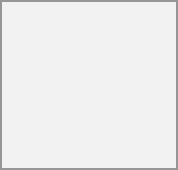

In the Files app, you can chat about files in the sidebar, and even have a call while editing the file. You first have to join the chat.

You can then chat or have a call with other participants, even when you start editing the file.
In Talk, a conversation will be created for the file. You can chat from there, or go back to the file using the ... menu at the top of the conversation.